1080° Avalanche 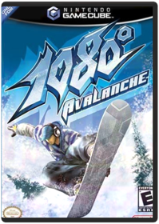 ToysIt''s you against nature in an adrenaline-soaked race down a mountain gone mad! It''s wintertime again, and the snow''s never looked this good! Ricky Winterborn and Akari Hayami have rounded up an all-new cast of characters to head back to the slopes for some high-speed competition. Race through realistic natural environments complete with powder drifts, ice patches and groomed hardpack...but don''t get comfortable. You''ll have to contend with massive avalanches, rockslides, cave-ins, bridge collapses and environments teeming with wildlife and other skiers. Not only that, but you must master a unique character balancing system and a catalogue of crazy tricks as you experience the speed rush of big mountain racing. Your slalom skills had better be tuned, because you''ll be going head-to-head with CPU-controlled masters or up to three human opponents. Get ready to rip!Animal Crossing NintendoAnimal Crossing for GamecubeBaten Kaitos NamcoBaten Kaitos is a world where islands float in the air and oceans are story from the past. A world already on the edge is about to fall into chaos, when a young man named Kalas goes after revenge. Travelling with the more noble Xhela, they'll enter the ancient Moonguile Forest and seek out answers to old questions. As they go, they'll be led by a spirit that guides Kalas to his goal — and his destiny as savior. Use Magnus Cards wisely — foods will ripen or rot, items will rust and gain or lose valueBaten Kaitos Origins 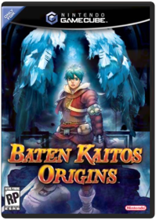 NintendoBaten Kaitos Origins is a prequel to Baten Kaitos: Eternal Wings and the Lost Ocean, a Nintendo GameCube exclusive. The plot revolves around a group of characters that are struggling to discover the source of frightening changes (both natural and political) that are occurring in their world. During their journey, they will learn many details that help flesh out the first game, including how the despotic Empire government came to be.Battalion Wars NintendoBattalion Wars GcubeBeach Spikers Sega Of America, Inc.MODEL- 61011 VENDOR- Sega FEATURES- Beach Spikers Hit the beach for some high-intensity volleyball under the hot summer sun in Beach Spikers for Nintendo GameCube This Arcade smash hit showcases beautiful bikini-clad female teams of two in fierce competition for the volleyball championship. You can bump set and spike it with three friends in Versus Mode or team up with a customizable computer partner in Arcade Training and all-new World Tour Mode. Get the edge over competing teams by assigning skill points to your glistening beach babe teammate. You can also earn teamwork percentage points by honestly rating your teammates skills on the sandy court. If she drills her serve into the net and you compliment her instead of reprimanding her your teamwork percentage points will plummet. As you progress through the tournaments youll unlock new beaches hairstyles sunglasses faces and uniforms which can be used in other modes. Shadows play across the court as the day passes but dont worry your summer never has to end! * Play as one of 16 different teams or create your own. * Grab three friends and choose from four unique Versus Modes: Beach Spikers Beach Flags Beach P.K. and Beach Countdown. * Name your teammates and select their face skin tone hairstyle & color bikini country to represent and sunglasses. * Dynamic camera angles mind-blowing graphics and gorgeous character models. ESRB Rating : E for Everyone Genre/Category : Action/Sports System : Nintendo GameCube Number of Players : 14 Compatible Peripheral Features: Memory Card Standard Controller MANUFACTURER WARRANTY: 30 DAYSBlack & Bruised Majesco Sales Inc.MODEL- 01295 VENDOR- MAJESCO SALES FEATURES- Black and Bruised To these guys boxings no game. Its a matter of survival. Nineteen outrageous characters fight their way through grueling over-the-top slugfests to win fame fortune or respect. Play through their intertwining lives as they literally beat each other Black&Bruised!ESRB Rating : EveryoneGenre/Category : FightingSystem : Nintendo GamecubeNumber of Players : 2 Compatible Peripherals: MANUFACTURER WARRANTY: 90 DAYSBurnout 2: Point of Impact Acclaim Entertainment Inc.Capcom vs SNK 2 EO CapcomCapcom VS SNK 2 is composed almost entirely of classic Street Fighter and SNK fighting techniques, which means lots of charge moves, half and quarter circles, and super moves. What's new to the game are the different "grooves," or fighting styles. Although the "Capcom" and "SNK" grooves were introduced in a previous game, Capcom VS SNK 2 takes this concept a step further by introducing six different grooves: C, A, P, S, N, and K. Depending on which groove you choose, the type and number of fighting techniques you have available changes, with half of the grooves leaning towards traditional Capcom fighting and the other half leaning towards SNK-styled battle. The difference between the two fighting styles is mainly the availability of certain non-lethal moves such as air blocks, dodging, and rolling, with each groove having its own balanced mixture of the said moves.Custom Robo 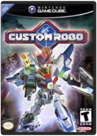 NintendoCustom Robo for GamecubeDef Jam Vendetta Electronic ArtsDef Jam VENDETTA invites you to the underground circuit of hardcore brawling. Get your props as you hook up with the urban local legends and battle for ultimate supremacy. Featuring an original storyline and more than 45 unique characters, Def Jam VENDETTA by EA SPORTS BIG provides over 1,500 varying moves, including dozens of signature special moves and taunts. This is your chance to earn money, power, and respect. Advance through more than 10 highly-detailed hip-hop venues, each filled with animated crowds, hot beats, and original music, and see if you can overthrow D-Mob, the underground king.Donkey Kong Jungle Beat NintendoDonkey Kong Jungle Beat GcubeEternal Darkness: Sanity's Requiem 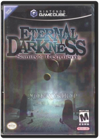 NintendoMature, third-person horror adventure featuring 12 playable characters in a story that crosses the bounds of history.Extreme G3 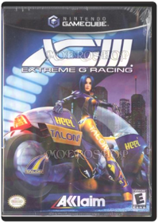 Acclaim Entertainment Inc.Throw on that helmet and get ready to break the sound barrier in the fastest-paced motorcycle game ever created. Choose from more than a dozen cool bikes, and then set out on the path to fame and fortune. Armed with futuristic weapons of all sorts, you'll try to blow away and blow past the competition. Use turbo boosts to speed past fellow bikers at key race moments, and enjoy the unique handling, braking, and weapons systems that each bike has to offer. Three modes of play provide endless excitement.F-Zero GX NintendoMODEL- DOL-P-GFZE VENDOR- NINTENDOFEATURES- F-Zero GX Hurtle through space at mind-boggling speeds as Captain Falcon and the galaxys best pilots race for glory! Nintendo and SEGA — both accomplished masters of high-speed fun — have collaborated to create the fastest most visually stunning racing game ever. F-Zero GX is the race to end all races as fearless pilots risk everything to claim the title of the top speedster in the universe. * F is for Fantastic Prepare for sensory overload as you tear through spectacular turns and huge drops. In 20 wild courses you will be astounded as a constant stream of lights and futuristic architecture blur past at amazing speeds. The neon lights of Mute City have never looked so good. Not all the locations feature bright lights and big cities. You will also travel to the lush forest of Green Plant watery vistas of Big Blue and barren wasteland of Sand Ocean. Each is filled with unpredictable twists and turns that will take plenty of steering skill to master. Gawkers beware. If you get caught up in ogling the eye-candy you will find yourself in last place or even worse: scrap metal! Hitting walls and mines will deplete your energy. You can attack other racers to force them out of the race. You will have to carefully balance the twin needs of speed and survival as powerful boosters give you a temporary jolt of speed but will draw down your shields. Fortunately pit areas throughout each track will replenish your vehicles energy. * Grand GX Modes New to the F-Zero series a Story Mode brings this fast-paced world to life like never before. Gripping CG movies chronicle Captain Falcons relentless quest for the championship belt. Multiple objectives ratchet up the challenge — and fun. Collect energy capsules dodge falling boulders and even battle a gang of street thugs in a high-speed chase. Skills sharpened by Story Mode challenges will be helpful in the other modes as well. In Grand Prix mode you select from four cups of five races ...Final Fantasy: Crystal Chronicles Square EnixFinal Fantasy Crystal Chronicles for GamecubeGauntlet: Dark Legacy Midway EntertainmentBrand new and Sealed Nintendo Gamecube Game. Backed by a 45-day guarantee. Will also work on the Nintendo Wii system as well.Geist NintendoGeist is modern supernatural mystery. You play a Spectral Operative - a special agent who can become a ghost. Travel the hallways, labs and chambers of a shadowy compound, searching for your body, as it's mysteriously being kept alive by people with an agenda you must unravel.Gladius Lucas Arts EntertainmentGladius follows the amazing adventures of two young heroes who turn the gladiator arena into the stuff of legends!Godzilla: Destroy All Monsters Melee Atari Inc.In Godzilla: Destroy All Monsters, a worldwide kaiju attack has begun, and only Godzilla can stop them! Cause massive, unthinkable amounts of destruction in 4-player battlesHunter: The Reckoning 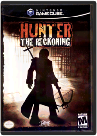 InterplayMODEL- 71866 VENDOR- VIVENDI FEATURES- Hunter: The Reckoning Set in White Wolfs World of Darkness Hunter: The Reckoning is a third-person action-shooter where players take the role of one of four unique hunters - Deuce a biker ex-con Father Cortez a prison chaplain Kassandra a raver chick and Samantha a tough ex-cop. Armed with a variety of fearsome weaponry players will battle it out with a plethora of supernatural enemies. Non-stop heart-pumping action combined with outstanding graphics bring the true spirit of Hunter: The Reckoning to life and give players a taste of the World of Darkness. * Single or multiplayer madness! 1 - 4 Hunters battle evil - all on the same screen. * Unload both barrels on 20 types of monsters from zombies to werewolves tovampires including 7 insane boss characters. * Deal out the damage with over 20 melee ranged and spell weapons including axes shotguns swords and flamethrowers. * Take apart your enemies piece-by-piece by dismembering heads arms and legs. * Movement Independent Targeting technology makes use of both analog sticks to allow the player to simultaneously move and shoot in different directions. ESRB Rating : M for Mature Genre/Category : Action System : Nintendo GameCube Number of Players : 14 Compatible Peripheral Features: MANUFACTURER WARRANTY: 90 DAYSIkaruga 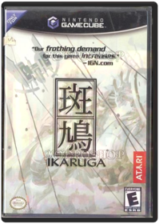 Atari Inc.Ikaruga is a 2-D scrolling space shooter (with options for either a vertical or horizontal display) set against a 3-D backdrop with a combination of rich Japanese storytelling and high-powered fighter-pilot heroics. Players take the role of hero Shinra, the lone survivor of a freedom federation that was massacred by the evil, power-hungry conqueror Tenro Horai. Now Shinra, in his newly-built ship, the Ikaruga, must fight for aging, exiled people who are depending upon him for their survival. Join the sole warrior as he battles the evil Horai in the hopes of restoring peace. Those already familiar with Ikaruga from the Japanese Dreamcast release will appreciate vital game upgrades such as enhanced graphics, a new demo mode that clues players in to the "perfect" round and private passwords; high scorers can post their accomplishments on the official Ikaruga web site and establish bragging rights within the worldwide Ikaruga community.Knockout Kings Electronic ArtsThe Legend of Zelda: Collector's Edition 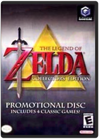 NintendoThe Legend of Zelda: Four Swords Adventures NintendoLegend of Zelda: Ocarina of Time / Master Quest NintendoNintendo Gamecube 2-Game Bonus Disc: Zelda Ocarina of Time & Master Quest. Sneak Preview Promotional Disc. UPC #0-4549670226-7The Legend of Zelda: The Wind Waker NintendoNintendo's thematic action-adventure sequel to Ocarina of Time takes the series back to its more cartoonish roots. Utilizing a completely new look with cel-shaded graphics, the game casts players in the role of a familiar young boy, who sets out to save his kidnapped sister. Gameplay is vintage Zelda, only that the game's overworld is covered by water. Players have to control the direction of the wind to sail across the ocean and find dungeons, towns, and plenty of secrets. A special Game Boy Advance link-up option lets another player join the quest and give hints and assistance via the handheld. Legend has it that whenever evil has appeared, a hero named Link has risen to defeat it...Lord of the Rings The Two Towers Electronic ArtsLord of the Rings: The Two Towers lets you experience the intense action of the classic novel & film!Luigi's Mansion 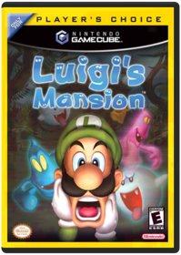 NintendoLuigi's Mansion is a great adventure game starring the previously-overlooked Mario brother!Mario Golf: Toadstool Tour 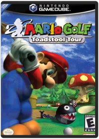 NintendoTees, clubs, golf carts, and ... Piranha Plants?! It must be Mario Golf! Mario, Peach, Donkey Kong and a cast of their cohorts have dusted off their clubs and set their sights on the Toadstool Tour championship. Two new styles of golf courses and a new swing system offer both the seasoned Mario golfer and those new to the game a fresh look at golfing in the Mushroom Kingdom. Features include: Choose to play on a conventional course or an all-new course designed from the ground up to be all about the Mushroom Kingdom! Chip over warp pipes and avoid hazards like Piranha Plants, Chain Chomps and Thwomps when playing on Mario-inspired courses. Tee for two, three or four! You can tee-off solo or fill out a foursome for some friendly competition. Control your swing in a manual mode for experts and a partially automated mode for novices.Mario Kart: Double Dash!! with Bonus Disc 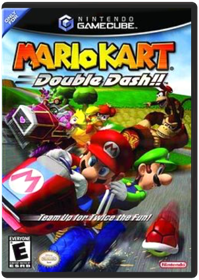 NintendoMega Man Anniversary Collection 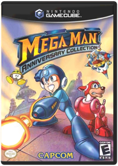 CapcomMega Man Compilation disc, put together in celebration of Mega Man's 15th birthday. Paying tribute to Mega Man creator Keiji Inafune, Capcom's Mega Man Anniversary Collection anthology set will collect Mega Man 1 through 8 in a single package in addition to two arcade titles never before released in the U.S., Mega Man: The Power Battle and Mega Man: The Power Fighters. In addition to an updated soundtrack, fans of the blue hero will also find a cache of unlockable bonus features that include 30 minutes of anime (PlayStation 2 version), producer interviews (GameCube version) and a history of the series.Metal Gear Solid: The Twin Snakes KonamiIn Metal Gear Solid: The Twin Snakes, superspy Solid Snake infiltrates the GameCube for one of the most games ever! Twin Snakes is a complete remake of the legendary Metal Gear Solid, with updated graphics for better, smoother gaming. Prepare to save the world, in the game that launched a classic series and started the spy gaming genre!Metroid Prime 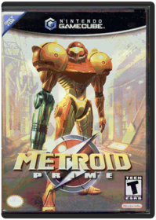 NintendoMetroid Prime takes you back to the dark & claustrophobic world of the Metroids — they've mutated into an evil more powerful form and Samus Aran is sent to stop them! Runs in progressive scan mode and supports Dolby Pro Logic II, for better picture and sound on your home thater systemMetroid Prime 2: Echoes NintendoHunted by a mysterious entity and a warring race called the Ing, Samus Aran must explore the light and dark worlds of this doomed planet to discover secrets and augment her suit's weapons and abilities. And now, for the first time in the history of the celebrated Metroid franchise, up to four players can battle each other as they search for weapons, grapple across ceilings, and turn into Morph Balls to make their escapes.Midway Arcade Treasures 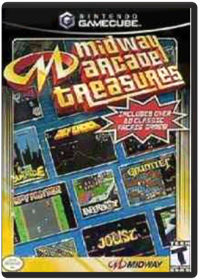 Midway EntertainmentMidway Arcade Treasures brings back the arcade classics — on your GameCube, for the first time!Midway Arcade Treasures 2 Midway EntertainmentMidway Arcade Treasures 2 brings together the hit games of the arcade, and delivers them to your Xbox! Great gaming and classic action combine in one collection. Play robot football in Cyberball 2072, race F-1 cars in Championship Sprint and go one-on-one on the ball courts with Arch RivalsMortal Kombat: Deadly Alliance Midway EntertainmentMortal Kombat: Deadly Alliance takes you deeper into the Outworld with all-new matches, as you face the deadliest fighters on(or outside) Earth!Need for Speed Underground 2 Electronic ArtsDiscover the living, breathing world of Need for Speed Underground 2. Taking place in a massive, free-roaming city featuring five distinct interconnected neighborhoods, Need for Speed Underground 2 delivers an immersive game world where reputation is everything. As you explore the city, you'll encounter rivall racers who will school you in ways of the underground and tip you off to the hottest racing spots in town. With the most comprehensive tuning options, all new game modes and the industry's most sought-after cars.Need for Speed: Hot Pursuit 2 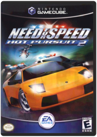 Electronic ArtsIn Need For Speed 2: Hot Pursuit, you've been challenged to hit the ultimate racing Circuit — the high-stakes, high-speed underground street racing circuit!Nintendo GameCube Preview Disc NintendoIncludes five playable demos. Sonic DX, Splinter Cell, Billy Hatcher, Viewtiful Joe and Soul Calibur II. These are limited demos only, NOT full games.P.N.03 CapcomP.N.03 brings you the ultimate mission of a powerful future fighting machine!Paper Mario: The Thousand-Year Door 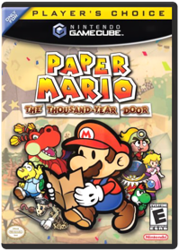 NintendoPaper Mario: Thousand Year Door is a full-blown role-playing game starring a classic 2D character! Time passes and pages turn, leading Mario to turn back to his paper form as he faces a new threat. Crawl through classic-style dungeons as you explore a number of levels, all taking you to different worlds and time periods. Every new chapter is a new adventure as you help Mario collect the Seven Star Stone jewels he needs!Pikmin NintendoPikmin is a little ant from space, looking to get back home as fast as possible. Help him get the parts he needs to finish his repairs! Real-time action and intuitive controls combine with gorgeous cartoony graphics for a whole new gaming experience!Pokemon Box Ruby & Sapphire NintendoThe kit gives you a gamedisc that allows you to connect your GameBoy Advance Pokemon.Pokemon Colosseum 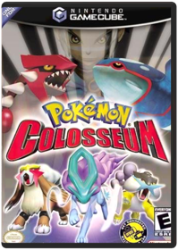 NintendoPokemon Colosseum - If you've conquered the Pokemon Stadium games, then the next step up is winning in the massive Colosseums! In this game, you'll be challenged to retrain and convert the infamous "Dark Pokemon". These are Pokemon that were mistreated during training. Open their hearts through kindness & training, then battle them against champion trainers in the Colosseums! Work with Dark Pokemon to develop a strong relationship with them — open its heart so that it'll fight for you in the Colosseum!Pokemon Colosseum Bonus Disc NintendoOriginally available to those that pre-ordered Pokemon Colosseum. It contains a trailer for Pokemon Colosseum (taken from the Japanese version of the game), a trailer for Jirachi Wish Maker (the new Pokemon movie), and the downloadable Pokemon, Jirachi, that works with the Game Boy Advance Ruby or Sapphire titles. In order to access the bonus Pokemon, a GBA, a copy of thew two GBA games, and a GBA/GCN link cable are required.Pokemon XD: Gale of Darkness 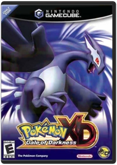 NintendoReturn to Orre for an all-new RPG in an expansive setting with a sinister plot and characters the likes of which you have never met before. With Eevee as your companion, you'll seek to unravel the mystery of Shadow Lugia. Darkness has fallen over this strange land, and the fate and welfare of Pokemon lies in your ability to Snag and Purify them before it's to late.R: Racing Evolution 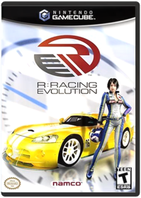 NamcoNamco's new racing title is a realistic racing simulation is the name of the game in R: Racing Evolutions, where players can customize fully licensed cars, and race in eleven fictional and real-life tracks. Four main game modes include Time Attack, Arcade Mode, Vs Mode, and the new story driven Racing Life Mode. Compete in eight different race types such as Circuit, Rally and Drag racing. Put the pressure on competing drivers with the innovative new Interactive Driver AI System, which uses a pressure gauge to recreate the battle of nerves on theResident Evil Zero CapcomBefore the mansion... before the disaster... evil is born.
Something terrible is seeping into the once pristine mountain air. The residents of Raccoon City go about their lives unaware of the dark fate that surrounds them. Sent in to investigate a series of grisly murders in the area, S.T.A.R.S. Bravo Team scrambles into action. On the way to the scene, Bravo’s helicopter crashes. Although everyone survives, what they discover next is a gruesome site. An overturned military transport truck, riddled with corpses. Rookie member Rebecca Chambers is beginning to wonder what she got herself into. Bravo Team is about to discover the evil nightmare that is growing all around them.Resident Evil CapcomResident Evil takes you into the heart of terror as you battle the unthinkable — the walking dead.Resident Evil 2 CapcomUnlike Capcom's release of the original Resident Evil on GameCube, which was a revamped game designed to take advantage of the 128-bit platform, Resident Evil 2 is straightforward port of 2000's Dreamcast version with no additional enhancements to visuals, sound, or significant changes to gameplay. This game, along with Resident Evil 3, has been released with the intent to round out the storyline beginning with Resident Evil 0. For those unfamiliar with previous versions of Resident Evil 2, players take control of police officer Leon Kennedy or Chris Redfield's sister, Claire, as they make their way through a series of static, pre-rendered environments.Resident Evil 3: Nemesis 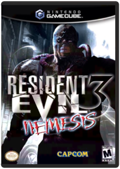 CapcomThis is the next terrifying chapter in the Resident Evil series. You will join Jill Valentine in her attempt to escape a nightmarish city in ruins. You must help her flee from hordes of flesh-eating zombies, hideous mutants, and a relentless new nemesis. You’ll soon discover you must rely on cunning and brute force to stay alive. The game features challenging enemies that come back to life at any time, and a plot that reveals more details of Umbrella Corporation's devious activities.Resident Evil Code Veronica X CapcomResident Evil: Code Veronica X is a sharper version of the hit game, Code Veronica, done especially to take advantage of the abilities of the PS2Resident Evil 4 CapcomIn Resident Evil 4 you'll know a new type of horror, as the classic survival-horror action returns with all-new characters, controls and storylines. We last saw Leon S. Kennedy in Resident Evil 2 - a rookie cop in Raccoon City, fighting to stay alive. That was six years ago. Since then, government forces have managed to control the zombie threat and Leon has become a Federal agent. When the President's daughter is kidnapped, Leon tracks her to a remote, hidden fortress in Europe - where he'll relive the horror he faced six years before. Players will face never-before-seen enemies that make Nemesis seem like a kitten. You'll be wishing for the usual Resident Evil zombies!Sega Sports NBA 2K3 Majesco Sales Inc.MODEL- 61015 VENDOR- Sega FEATURES- NBA 2K3 NBA 2K3 powers forward with the kind of improvement that only results from an off-season dedicated to perfection. Imagine jump shots so real players actually adjust their movement in mid-air based on distance from the hoop and defensive pressure; a passing touch that gives you the control to skirt a defender or start a fast break; and dribble moves that let you jab left, rock right, crossover, spin and much more. Its all happening in NBA 2K3. No other game delivers the physical element of basketball like this. Accurate impact from collisions, especially hard fouls and authoritative dunks; shot blocking with emphasis on precise hand-to-ball contact; and the ability to lunge for the loose ball, even if it means ending up on some celebritys lap. With commentators that analyze strategy, cutscenes portraying lifelike player interaction, uniforms that move like real fabric, and a brand new ESPN broadcast system that wraps it all together, NBA 2K3 provides the complete NBA experience. * ESPN Broadcast Presentation — Replays, scores, music, and more are displayed in the famous ESPN style. * Expanded Passing Game — Control pass type and direction, fake a pass, and more. * Exciting Low Post Game — Fronting, faking, pivoting and facing upSega Sports NHL 2K3 Sega Of America, Inc.Realistic gameplay combined with total control over your team make Sega’s NHL 2K3 the game of choice for serious hockey fans. The game captures all the intricacies of the NHL, from the furious, hard-hitting action on the ice to the day-to-day decisions made in the front office. Don’t like the production you’re getting out of one of your players? Send him down to the minors for a few weeks of seasoning to get his game in order. Prefer high-scoring shootouts or 1-0 grind-it-out defensive struggles? Tweak the game’s highly customizable AI to set things just the way you like them. Regardless of your preferences, NHL 2K3 delivers the goods to make this a more than passable hockey sim.
Like most of Sega’s recent sports releases, NHL 2K3 hangs its hat on stellar gameplay and sweet graphics. Little, if anything, is overlooked: players move and react much like their real-life counterparts—goalies are especially acrobatic; the puck seamlessly glides, flips, and bounces around the rink and off the posts and goalie’s pads; players can be pinned to the boards during a scramble for the puck; missed shots are covered up by a diving goalie or slapped in off ensuing rebounds; arenas are painstakingly re-created and feature music and sounds specific to each. Off the ice, there’s plenty of strategy and options to tinker with. NHL 2K3 boasts over 30 sliders to alter effects ranging from ice friction to referee collisions. And, of course, there’s the franchise mode that allows up to 250 years of dynasty building. —Larry White
(This review refers to the PlayStation2 version of this game)Skies of Arcadia : Legends "Sega of America, Inc."You must gather your own crew of air pirates and journey through uncharted skies to vanquish the empire from every corner of the map. Along the way, you'll wage battles against savage monsters and evil Pirates as you make a name for yourself on land and in the sky. For the first time you can experience the complete story of the critically acclaimed RPG, with hours of new gameplay containing additional background storiesSoccer Slam "Sega of America, Inc."Sega Soccer Slam may mention the beautiful sport in its title, but you’ll not find any competition here for the FIFAs or Pro Evolutions of this world. This is pure arcade soccer: loud, colorful, completely unrealistic, yet soooo much fun. Gameplay is simple: three-a-side fast footie action. You can head, dummy, slide tackle, shoot, pass, and conjure some quite unbelievable super-special shots using button combos and shot gauges. The pace is frenetic, with most games being tense 9-7 affairs. The soccer action plays really well.
The game is similar in style to Virtua Tennis in concept, though a lot less serious. Modes of play are standard: arcade, tournament, quest, etc. Play out the quest mode and the similarity to the aforementioned tennis title is clear. You select one of six preset teams based on continent and elemental power. Fire, water, toxic, spirit, electric, and ice form the special powers that each team can unleash on the pitch.
Teams are taken on in a round-robin style league with a special challenge offered to you after each match. The challenges are fun and in the style of Virtua Tennis—complete each one and you’ll be given cash to spend in the shop, where you can purchase kit upgrades, new grounds, game artwork, and more. Win the leagues and you'll be able to unlock extra hidden teams. Other game modes allow you to create a personalized super team and unlock more characters.
The game's graphics are excellent and each player is instantly recognizable with great animations and detail. The stadiums are well animated and the sound effects are vibrant. The game oozes Sega quality. All in all, Sega Soccer Slam is ideal for those less serious sessions and for pick-up-and-play gaming. —Laurent S. HallSonic Adventure 2 Battle Sega Of America, Inc.Most Sonic the Hedgehog games are specifically for Sega related platforms but Sonic Adventure 2 Battle is an original game made for the Nintendo GameCube. Sonic and crew need to stop Dr. Eggman from his nasty tricks again. There's new characters brought into the Sonic universe! A mysterious dark hedgehog called Shadow and a bat named Rouge. The Sonic Adventure 2 Battle has been enhanced with graphics, doubling the framerate and now is set as a multiplayer system.Sonic Gems Collection Sega Of America, Inc.A second collection of classic Sonic The Hedgehog games, with nine total games (and some secret games) which include Sonic CD, Sonic R, Sonic the Fighters and more. Also included is a Museum Mode of Sonic history.Sonic Mega Collection Sega Of America, Inc.Take a trip back in time with the character that redefined video games in Sonic Mega Collection for the Nintendo GameCube. Sonic Mega Collection is packed with seven classic Sonic games, each presented in its original blistering-fast form. Trace the blue blur's roots in the first three Sonic the Hedgehog games, and expand the experience with Sonic & Knuckles' lock-on technology. Then mix things up with Sonic Spinball, Sonic 3D Blast, and Dr. Robotnik's Mean Bean Machine. And if you need a break from the action, head over to the Extras section and check out movies, illustrations, and comics of Sega's signature character. You'll get it all seven times over when you pick up the Sonic Mega Collection!Soul Calibur 2 NamcoSoul Calibur II returns you to the incredible quest of the world's greatest warriors, battling to claim the ultimate sword!Spider-Man Activision Inc.In Spider-Man, you get to feel the action of being Spider-Man, the world-famous hero — and you go beyond the adventure you see in the film! Sharpen your skills to the point where you can face off against your nemesis, the Green Goblin!Spider-Man 2 Activision Inc.Spider - Man is about to scale new heights. The highly anticipated sequel game to Columbia Pictures mega hit film Spider - Man is about to get even bigger as you take the role of Spider - Man through expansive locations from the movie. Patrol the streets and skies of a living, breathing, massively modeled Manhattan, scaling buildings, slinging webs, fighting crime and confronting numerous villains, including Dr. Octopus (Doc Ock). Prepare to go wherever a spider can as the game transports you off the silver screen into a larger - than - life adventure all your own. For a movie - like experience, battle the nefarious Doc Ock and his henchmen in locations taken straight from the film. In addition to the Marvel characters featured in the upcoming film sequel, additional diabolical villains from the expansive Marvel comic character roster make exclusive game appearances, including Mysterio and Lizard. Go wherever a spider can - Immerse yourself in the city of Manhattan, which is constructed as a large streaming map populated by cars, pedestrians and criminals. Jump from street level to rooftops as you patrol the city. New web - swinging abilities - Realistic physics impact your direction as you swing from building corners, lampposts - even helicopters. Harness your super strength for powerful jumps and lightning - fast web crawling. Face the responsibilities of a Super Hero - Take time out from your main missions to foil random crimes in the streets. The more crimes you prevent, the more your hero rating increases, giving you access to advanced attacks and maneuvers.Star Fox Adventures NintendoStarfox Adventures for Gamecube MODEL- DOL-P-GSAE VENDOR- NINTENDO FEATURES- Star Fox Adventures Breathtaking graphics and an epic storyline propel this all-new spectacular from Rare and Nintendo. The despotic General Scales has unleashed powers that are literally tearing apart the once-peaceful Dinosaur Planet. With the survival of Fox McClouds home planet at risk, the intrepid veteran of Star Fox 64 and Super Smash Bros. Melee gets an urgent message to battle Scales and his vast army of cackling SharpClaws. Fox gets strong support from Star Fox Team members Slippy, Peppy and Rob. Unexpected help comes from Prince Tricky, the playful heir to the EarthWalker tribal throne. On the planet surface, Fox must rely on the mystical powers of a unique staff as he battles Scales minions, befriends peaceful plant-eaters and encounters eerie spirits that hold the key to the planets survival. Most intriguing of all is Krystal, a beautiful traveler from a distant planet. Rare and Nintendo have lovingly crafted the games incredible graphics, including gorgeous water effects and Foxs phenomenally detailed fur. For a sharper and clearer image, select the Progressive Scan option when playing on a TV set that supports that feature. The sound is top-notch, too, from the uniformly brilliant voice talent to the endlessly evocative music. This game supports Dolby Pro Logic II. Star Fox Adventures supports progressive scan on TV sets that have that feature. — SPECIFICATIONs —————— ESRB Rating : T for Teen Genre/CategoryStar Fox Assault 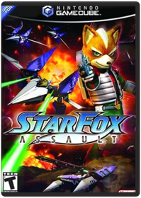 NintendoFox McCloud and the Star Fox team return to engage a grave new threat in the air and on the ground! Roll over hostile terrain in a heavily-armored Landmaster Tank, or bring the hurt to the enemy on foot. Play solo missions or join the fight with up to three other players, or engage in four-player split screen battlesStar Wars Rebel Strike Rogue Squadron III LucasArtsStar Wars Rogue Squadron II: Rogue Leader LucasArts, a Lucasfilm Ltd. CompanyIn Star Wars Rogue Leader: Rogue Squadron II, you'll take on the role of Luke Skywalker and engage in some of the fiercest battles in the Star Wars trilogyStar Wars Rogue Squadron III: Rebel Strike 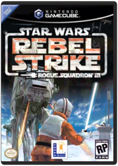 Lucas Arts EntertainmentIn Star Wars: Rebel Strike - Rogue Squadron III, you'll visit famous locations and characters from the Star Wars universe to wage war on the Empire!Star Wars: Bounty Hunter LucasArtsThrough Jango Fett—father of Boba Fett—players will plunge into the dark, deadly world of a bounty hunter. Inspired by events between Episode I and Episode II, Star Wars: Bounty Hunter presents an original, compelling, third-person action experience that establishes Jango Fett's place in the Star Wars galaxy and his connection to the notorious Clone Army. The game draws players into Jango Fett's sinister and seedy world, where thieves and assassins thrive. Using his cunning and a host of deadly skills, Jango Fett ventures into the rarely explored dark side of the Star Wars universe to track down the elusive leader of a mysterious and deadly cult. All the while, he'll compete against a brutal rival from his past in a quest to capture the ultimate bounty, dead or alive.
Gameplay emphasizes intense combat and physical action in the relentless pursuit of prey across six fantastic worlds and 18 levels. Jango Fett faces off against an onslaught of the worst scum in the universe, including crime lords, corrupt politicians, and enemies of various species. He is equipped with an arsenal of powerful weapons such as dual blaster pistols, a flamethrower, missiles, and a distinctive jet pack.Star Wars: The Clone Wars LucasArtsStar Wars: Clone Wars send you into the vicious battles of the Clone Wars, between Episodes II and III! Incredible graphics make you feel the every Laser blast, piece of debris, and atmospheric effect Engage in all-out intergalactic war with up to four players Full Sound and Video experience with Dolby Pro Logic II Surround sound and a 16 - 9 enhanced widescreen mode Put yourself into the legend of Star Wars with this exciting new game!Super Mario Sunshine NintendoSuper Mario Sunshine takes Mario and Peach to beautiful Sunshine Island, for a much-needed vacation — until a graffiti artist dressed like Mario goes around vandalizing the place!Super Monkey Ball Sega Of America, Inc.Labyrinth/Marble Madness hybrid with a unique platform twist, based on the Sega arcade game of the same name. Players control not a character, but tilt the entire environment to guide their "monkey ball" to the goal. Super Monkey Ball's "Main Mode" is constructed of more than 110 different levels of various difficulty, most of them taken from the arcade game. Players begin their monkey adventure going through these different levels on various settings of difficulty.Super Monkey Ball 2 Sega Of America, Inc.In Super Monkey Ball 2 you'll enter the most unusual and fun game worlds you've ever seen!Super Smash Bros Melee NintendoSuper Smash Brothers Melee is a great fighting game where you put your favorite Nintendo characters against each other, to find out who's the toughest of them all!Tales of Symphonia 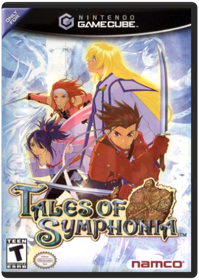 NamcoTales of Symphonia challenges you to answer an immense question: Would you sacrifice your life to save a world? With its beautiful 3D cel-shaded graphics and immersive, emotionally charged epic story, you'll walk the line between good & evil — as the fate of two interlocked worlds hang in the balance.Teenage Mutant Ninja Turtles KonamiBe your favorite Teenage Mutant Ninja Turtle and master your ultimate ninja skills in their action packed world. Roam NYC streets, scour underground sewers and fight your way across rooftops on a collision course with The Shredder and his vile pack of Foot Ninjas.Time Splitters 2 Eidos InteractiveTimeSplitters 2 brings you new and improved action that's more furious than before! Furious 2 - 4 split-screen multiplayer action for some serious hot-leaded action!TimeSplitters: Future Perfect 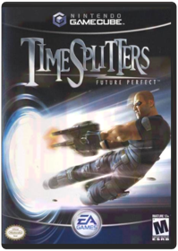 Electronic ArtsTimeSplitters: Future Perfect is a sequel to the acclaimed first person shooter. Battle across through the centuries to change the past, using a massive arsenal of firearms. As you fight, you'll get help from your past and future selves as you infiltrate ancient castles, destroy evil robots, and more.Tony Hawk Pro Skater 4 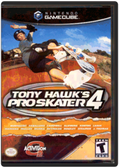 Activision Inc.Drop into the ultimate skating challenge with Tony Hawk's Pro Skater 4. Players take on the role of legendary skateboarder Tony Hawk and 13 other athletes as they skate through enormous free roaming levels, choose from 190 progressively harder goals and build their skills to perform 14 of the greatest skateboarding stunts of all time. Tony Hawk's Pro Skater 4 delivers the deepest and most challenging gameplay experience yet in the Tony Hawk's Pro Skater series. The game's enhanced career mode allows players to earn respect and the chance to take on all new pro goals by conquering a skater-specific Pro Challenge based on each skater's personal history.Tony Hawk's Underground Activision Inc.In a departure from former games in the series, Underground gives players the chance to take an ambitious non-pro skater from an unknown, to superstar status. For the first time in the series, players will be able to get off their board and explore the expansive levels on foot, or in a vehicle. Customize the look of your skater, your skater's tricks, and even create custom skateparks. Tony Hawk's Underground features nine sprawling courses, as well as a level of freedom and customization that is unprecedented in the popular series.Tony Hawks' Pro Skater 3 Activision Inc.Skate through realistic urban settings all over the world, avoiding pedestrians, cars, traffic accidents, natural disasters and weather hazards.True Crime: New York City Activision Inc.Wield the ultimate power as a rogue street cop in New York City. You are Marcus Reed a former criminal turned cop using and abusing your authority to hunt down the murderer of your mentor while cleaning up the 'hoods of New York City from Harlem to Chinatown. Your undercover investigation leads you through a murderous web of gangs and deceit as you battle crooks your past and everything else the city can throw at you.Features Street Cop Life: Bust criminals take down foreign and local gangs search and seize extort interrogate and dispense justice your way - by the book or indulge in the temptations of the job. Rule New York City: Free-roaming authentic neighborhoods GPS-accurate streets and subways landmark buildings and countless interiors. Dynamic Environments: Unprecedented environmental gameplay - use ovens stoves machines coolers pots pans chairs or anything else you can grab to pound enemies. Virtually every aspect of each city block - including people streets and buildings - reacts and changes based on your "law enforcement" decisions and ability to combat crime. High-Speed Shootouts: Race through the streets of New York in shootouts! Pull off stunts with motorcyles sports cars trucks buses and more. Brutal Combat Styles: Switch fighting styles on the fly from street fighting to a variety of marial arts modes opening up an array of moves and strategies totake down enemies. Heavy Weapons: Use high-powered police issue weaponry bats swords and other melee weapons or obtain black market arms like flamethrowers grenade launchers and more.Format: GAMECUBE Genre: ACTION/ADVENTURE Rating: M - Mature UPC: 047875810099 Manufacturer No: 81009True Crime: Streets of LA Activision Inc.True Crime: Streets of L.A. lets you use your brutal reputation and skill with a gun to good use — putting a stop to the scum that's ruining L.A.!Turok: Evolution Acclaim Entertainment Inc.Fourth (numbered) installment in the comic-based FPS series explores the story of how original Turok Tal'Set became the man he is. White fighting his nemesis Captain Tobias Bruckner in 1886 Texas, the two fall into a rift between their world and the Lost Lands, a mysterious place full of civil upheaval and much danger. Thus the adventure of Turok: Evolution begins as Tal'Set continues to seek revenge on the wicked Bruckner in the middle of the tumultuous world. Players run, jump, climb, swim or sneak through the levels, blowing away prehistoric foes with an all-new arsenal of weapons, including Variable Payload Cruise Missiles, Gravity Disrupter Beams, and the Swarm Bore.Viewtiful Joe CapcomFighting action game from Capcom Studio 4's Atsushi Inaba. Joe was just your average, well, Joe until he was transported into his favorite action movie. In his new environment, Joe discovers he has all the abilities of Hollywood action-hero. Using new cel-shading techniques, VJ boasts a unique visual style that blends colorful 3D environments with a twisted take on traditional 2D gameplay. Joe's power stems from skillful martial arts attacks, high-flying acrobatics, and time-bending special effects. Players can slow down or speed up time when attacking/ dodging enemies, as well as zoom in on the action to execute different attacks.Wario World NintendoIn Wario World you'll enter a world of whimsical platform action starring Mario's evil twin, Wario!Wave Race: Blue Storm 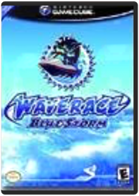 NintendoYou'll need a wet suit for this one. Zooming through gorgeous lagoons and brutal storms, your personal watercraft racer gleams with stunning water and lighting effects. Stunning waterscapes are just one of the highlights in this follow-up to the best-selling Wave Race 64. Intense water-soaked actions will keep you coming back for more over-the-top aquatic action. Wave Race Blue Storm is about heart-pounding thrills that never let up. Jump in!Worms 3D Acclaim Entertainment Inc.Worms 3D - This is a fantastic 3D strategy game that offers in-depth strategy action combined with cartoon fun! Using crazy weapons, tools and utilities to destroy the rival worms invading your territory. The winning team is the one that manages to survive the mayhem and have worms left standing when the dust settles! Each team of worms has a devastating arsenal - bazookas, grenades, dynamite, exploding sheep and the dreaded concrete donkey. Use these weapons to cause maximum destruction to enemy worms and conquer the yard! |


 Made with Delicious Library
Made with Delicious Library